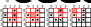

Kapitel 14 Game of Life
Übung macht den Meister, also werden wir heute eine Textversion des Game of Life Spiels implementieren. Es wird kaum oder gar kein neues Material geben, denn wir konzentrieren uns darauf, die Fähigkeiten und das Wissen, das du bereits hast, zu nutzen. Stattdessen liegt der Hauptfokus darauf, dieselbe Funktionalität mit verschiedenen Ansätzen zu implementieren, um sowohl gemeinsame als auch lösungsspezifische Aspekte des Codes leichter erkennen zu können.
14.1 Game of Life
Das Game of Life wurde von dem britischen Mathematiker John Horton Conway erschaffen. Es handelt sich hierbei eigentlich nicht um ein Spiel, sondern um eine Simulation, bei der man Anfangsbedingungen festlegt und beobachtet, wie sich die Population entwickelt. Die Regeln, wie auf Wikipedia beschrieben, sind sehr einfach:
- Jede lebendige Zelle mit zwei oder drei lebendigen Nachbarn überlebt.
- Jede tote Zelle mit drei lebendigen Nachbarn wird zu einer lebendigen Zelle.
- Alle anderen lebendigen Zellen sterben in der nächsten Generation. Ebenso bleiben alle anderen toten Zellen tot.
Trotz der Einfachheit der Regeln erzeugen sie eine bemerkenswerte Evolution einer Zellkultur und führen zu vielen dynamischen oder statischen Konfigurationen. Hier ist ein Beispiel einer Simulation mit einem zufälligen Anfangszustand.
Unsere Version wird weniger dynamisch sein, da wir uns an eine textbasierte Ausgabe halten werden, aber das gleiche Verhalten wie im obigen Video zeigen werden. Da dies eher eine Simulation als ein Spiel ist, benötigen wir lediglich drei Funktionen, die
- den Anfangszustand der Welt generieren,
- ihren Zustand im nächsten Zeitpunkt berechnen,
- sie ausdrucken.
Die letzte Funktion hilft uns zu sehen, was die ersten beiden tun, daher werden wir mit dieser beginnen.
14.2 Die Welt ausdrucken
Bevor wir damit beginnen, die Welt zu erschaffen und sie sich entwickeln zu lassen, benötigen wir eine Möglichkeit, sie zu sehen, eine print_world Funktion. Da dieses Kapitel in erster Linie um Praxis geht, werden wir die Funktionalität auf drei verschiedene Arten erzeugen:
- unter Verwendung von verschachtelten for-Schleifen
- indem wir Reihen einzeln ausdrucken, indem wir Elemente zu einem String zusammenfügen
- indem wir alle Elemente zu einem einzigen String zusammenfügen und nur einmal ausdrucken.
Hier ist die Übungsmatrix mit einem Gleiter-Raumschiff-Muster, das du verwenden kannst
import numpy as np
the_world = np.array([[" ", " ", "*", " "],
["*", " ", "*", " "],
[" ", "*", "*", " "],
[" ", " ", " ", " "]])Hier ist das Wörterbuch, das wir verwenden werden, um zwischen langweiligen, aber einfacher zu tippenen Zeichen und besser aussehenden in unserem Ausgabemedium zu übersetzen.
und so sollte es aussehen, wenn du es ausdruckst:
#> ⬜⬜⬛⬜
#> ⬛⬜⬛⬜
#> ⬜⬛⬛⬜
#> ⬜⬜⬜⬜14.3 Ausgabe über verschachtelte for-Schleifen
Der erste Ansatz besteht darin, ein Element nach dem anderen auszudrucken, indem du zuerst über die Reihen und dann über jedes Element der Reihe iterierst. Du weißt, wie man über Elemente iteriert, also musst du nur noch überlegen, welchen Wert du für den Parameter end der print-Funktion verwenden sollst und wann. Außerdem musst du das Symbol von der internen Darstellung in die Ausgabe mithilfe des OUTPUT_MAP-Wörterbuchs übersetzen (keine if-elses notwendig!). Füge den Code in die Funktion print_world_via_nested_loop ein, die einen einzelnen Parameter nimmt (es sollte ziemlich offensichtlich sein, welcher das ist). Dokumentiere die Funktion!
Implementiere print_world_via_nested_loop in print_utils.py
Teste es in code01.py.
14.4 Jede Reihe als einzelnen String ausdrucken
Die zweite Lösung besteht darin, über die Reihen zu iterieren, aber alle Elemente der Reihe zu einem einzigen String zusammenzufügen und dann nur einmal pro Reihe zu drucken. Bevor du jedoch Elemente zu einem einzigen String zusammenführen kannst, musst du sie mit dem OUTPUT_MAP-Wörterbuch mithilfe der Listengenerierung übersetzen. Du kannst das in einer einzigen Zeile machen: Erstelle eine neue Liste mit übersetzten Elementen, füge sie zusammen und drucke sie aus.
Implementire print_world_joining_rows in print_utils.py
Teste es in code02.py.
14.5 Das gesamte Feld als einen einzigen String ausdrucken
Unsere finale Lösung besteht darin, das gesamte Feld in einen einzigen String umzuwandeln und dann nur einmal zu drucken. Du weißt bereits, wie man einen String für eine einzelne Reihe erstellt. Jetzt musst du lediglich eine Liste von Strings erstellen, einen für jede Reihe, mithilfe der Listengenerierung (ja, das bedeutet verschachtelte Listengenerierungen!) und dann alle mit "\n" (neue Zeile) als Trennzeichen zusammenführen. Es wird also ziemlich verschachtelt, da du eine Liste (erzeugt durch Listengenerierung) zusammenführst, deren Elemente Strings sind, die wiederum durch das Zusammenfügen einer Liste von übersetzten Zeichen (die ebenfalls durch Listengenerierung erstellt wird) produziert werden. Wenn das verwirrend klingt, beginne einfach mit dem, was du bereits implementiert hast – eine einzelne Reihe in einen String umzuwandeln – und überlege, wie du die for-Schleife, die du verwendet hast, in eine for-Schleife innerhalb der Listengenerierung umwandeln könntest.
Implementire print_world_as_a_single_string in print_utils.py
Teste es in code03.py.
14.6 Die Welt erschaffen
Im Game of Life ist die Welt ein rechteckiges Gitter, dessen Größe wir mit WORLD_SIZE = (<W>, <H>) definieren werden, wobei <W> und <H> die von dir gewählten Dimensionen sind (zum Beispiel 10 mal 5?). Wir werden die Welt zufällig mit einem spezifischen Anteil an lebendigen Zellen zu Beginn generieren: P_ALIVE = 0.25 (du kannst das Verhältnis nach Belieben ändern). Wie beim Drucken werden wir mehrere Versionen desselben Verfahrens implementieren.
14.7 Die Welt mit NumPy erschaffen
Der einfachste Weg, die Welt zu erschaffen, ist über numpy.random.choice(). Du musst nur die Werte angeben, aus denen wir wählen ( " " und "*"), die Größe der Matrix und die Wahrscheinlichkeit, jeden Wert auszuwählen. Wenn du das Letztere nicht angibst, ist es gleich wahrscheinlich, dass jeder Wert gewählt wird, aber in unserem Fall sind die Wahrscheinlichkeiten für " " (tote Zelle) und "*" (lebende Zelle) unterschiedlich, daher musst du beide angeben.
Implementiere diesen Code in einer Funktion mit dem Namen create_world_via_numpy. Sie sollte zwei Parameter nehmen (die Größe der Spielwelt und die Wahrscheinlichkeit einer lebenden Zelle) und eine NumPy-Matrix mit der Welt zurückgeben. Behalte im Kopf, dass NumPy die Größe als (Anzahl-der-Reihen, Anzahl-der-Spalten) erwartet. Allerdings ist die Anzahl der Reihen die Höhe und die Anzahl der Spalten die Breite, also denke über die Reihenfolge hier nach! Sobald du den Code implementiert hast, solltest du eine ähnliche Welt sehen (seede NumPy mit 42 und du solltest genau die gleiche erhalten).
Implementire create_world_via_numpy in creation_utils.py
Teste den Code in code04.py mithilfe der von dir gewählten Druckfunktion.
#> ⬜⬛⬜⬜⬜⬜⬜⬛⬜⬜
#> ⬜⬛⬛⬜⬜⬜⬜⬜⬜⬜
#> ⬜⬜⬜⬜⬜⬛⬜⬜⬜⬜
#> ⬜⬜⬜⬛⬛⬛⬜⬜⬜⬜
#> ⬜⬜⬜⬛⬜⬜⬜⬜⬜⬜14.8 Die Welt mit verschachtelten Schleifen erschaffen
Lass uns dasselbe tun, aber ein Element nach dem anderen erstellen, indem wir eine Liste von Listen aufbauen und diese dann in ein NumPy-Array umwandeln. Hierbei iterierst du über Zeilen und Spalten (range ist definitiv nützlich) und erschaffst mithilfe der Funktion random.choices jeweils ein Element. Es funktioniert genauso wie numpy.random.choice, aber Wahrscheinlichkeiten werden als “Gewichte” bezeichnet. Sei vorsichtig, denn es gibt auch eine Funktion namens random.choice (im Singular “choice” und nicht im Plural “choices”), die fast auf die gleiche Weise funktioniert, aber es erlaubt nicht, Gewichte/Wahrscheinlichkeiten anzugeben!
Die Gesamtlogik sollte größtenteils unkompliziert sein. Du erstellst für jede Zeile eine Liste und fügst diese Listen zu einer einzigen Liste zusammen. Hierbei verwendest du konventionelle for-Schleifen. Für die Zeile beginnst du mit einer leeren Liste und erweiterst sie mit einer Liste, die von random.choices produziert wird (es gibt eine Liste zurück, nicht einen einzelnen Wert, daher müssen wir erweitern und nicht anhängen!). Ähnlich beginnst du mit einer leeren Liste für die Welt, in die du nacheinander eine Zeile hinzufügst. Sobald du fertig bist, konvertierst du es in ein NumPy-Array und gibst es zurück.
Eingabe und Ausgabe der Funktion sind gleich, es ändert sich nur, wie du die Lösung implementierst. Mein Zufallskeim war wieder 42.
#> ⬜⬜⬜⬜⬜⬜⬛⬜⬜⬜
#> ⬜⬜⬜⬜⬜⬜⬜⬜⬛⬜
#> ⬛⬜⬜⬜⬛⬜⬜⬜⬛⬜
#> ⬛⬜⬜⬛⬜⬜⬛⬜⬛⬜
#> ⬜⬜⬜⬜⬜⬜⬜⬜⬜⬜Implementire create_world_via_nested_loops in creation_utils.py
Teste den Code in code05.py mithilfe der von dir gewählten Druckfunktion.
14.9 Die Welt mit Listengenerierung erschaffen
Hoffentlich ist dir bereits aufgefallen, dass die for-Schleifen lediglich dazu verwendet werden, eine Liste zu erstellen, also solltest du denken “Das wäre einfacher mit einer Listengenerierung!”. Ja, das wäre es, und das ist unsere dritte Implementierung create_world_via_list_comprehension. Wir vereinfachen unser Leben, indem wir die ganze Reihe mit einem Aufruf erzeugen, indem wir den k-Parameter der Funktion random.choices angeben. Auf diese Weise erhalten wir eine Liste mit k Elementen (wofür sollte k stehen, für die Breite oder Höhe unserer Welt?) und verwenden Listengenerierung, um eine Liste von Reihen zu erstellen. Anschließend konvertieren wir sie in ein NumPy-Array und geben sie zurück. Gleiche Eingaben und Ausgaben, gleiche Funktionalität, nur eine leicht abweichende Implementierung. Hier gibt uns der gleiche Zufallskeim 42 wieder die gleiche Welt.
#> ⬜⬜⬜⬜⬜⬜⬛⬜⬜⬜
#> ⬜⬜⬜⬜⬜⬜⬜⬜⬛⬜
#> ⬛⬜⬜⬜⬛⬜⬜⬜⬛⬜
#> ⬛⬜⬜⬛⬜⬜⬛⬜⬛⬜
#> ⬜⬜⬜⬜⬜⬜⬜⬜⬜⬜Implementire create_world_via_list_comprehension in creation_utils.py
Teste den Code in code06.py mithilfe der von dir gewählten Druckfunktion.
14.10 Leben und sterben lassen
Erinnere dich an die Regeln der Simulation:
- Jede lebende Zelle mit zwei oder drei lebenden Nachbarn überlebt.
- Jede tote Zelle mit drei lebenden Nachbarn wird zu einer lebenden Zelle.
- Alle anderen lebenden Zellen sterben in der nächsten Generation. Ebenso bleiben alle anderen toten Zellen tot.
Das bedeutet, dass wir für jede Zelle auf fast die gleiche Weise ihre Nachbarn zählen müssen, wie wir Minen gezählt haben im Minesweeper-Spiel. Warum fast? Als wir Minen gezählt haben, wussten wir, dass die Zelle selbst leer ist, sonst wären wir explodiert. Hier müssen wir die Gesamtanzahl der lebenden Zellen zählen, ohne die Zelle selbst. Oder du kannst es auch anders ausdrücken: Wir müssen alle Zellen zählen und dann die Zelle selbst von dieser Anzahl abziehen. Hier sind einige Beispiele für die Glider-Welt mit sowohl einfachen als auch Grenzfällen. Denke daran, dass du im letzteren Fall die Grenzen für deine Slices anpassen musst.

14.11 Nachbarn mit Slicing zählen
In unserem ersten Ansatz implementieren wir diese Funktionalität mit NumPy-Array-Slicing, genau wie wir es im Minesweeper-Spiel gemacht haben. Ich schlage vor, dass du den Abschnitt zur Minenzählung noch einmal liest, aber nicht einfach den Code kopierst und einfügst, den du dort erstellt hast. Denke daran, wir üben hier, also lohnt es sich, den Code von Grund auf neu zu erfinden. Die gute Nachricht ist, dass es schneller gehen sollte, da du bereits eine Intuition dafür hast, wie es umzusetzen ist.
Erstelle eine Funktion count_neighbors_via_slicing(). Sie sollte nur zwei Parameter nehmen — die Weltmatrix und die Position der Zelle, für die wir die Nachbarn zählen — und eine ganze Zahl zurückgeben, die von \(0\) bis \(8\) geht (warum nur bis \(8\)?). Teste diese Funktion mit der Glider-Weltmatrix, die du oben finden kannst.
Implementire count_neighbors_via_slicing in evolution_utils.py
Teste es in code07.py.
14.12 Nachbarn mit verschachtelten for-Schleifen zählen
Was man mit Slicing tun kann, kann man auch mit for-Schleifen machen! Implementiere die gleiche Funktion erneut, aber anstatt einfache Slices mit Grenzwerten zu machen, verwende diese Grenzwerte, um über einzelne Zellen zu iterieren. Tipp: range kann sowohl start- als auch stop-Werte akzeptieren. Ansonsten benötigst du nur einen Zähler, der bei Null beginnt und jedes Mal um Eins erhöht wird, wenn die Zelle lebendig ist.
Der Funktionsname wird count_neighbors_via_for_loops() sein und sie sollte die gleichen Eingaben und Ausgaben wie count_neighbors_via_slicing() haben. Und natürlich sollten die zurückgegebenen Zählungen identisch sein und mit denen in der Abbildung oben übereinstimmen. Teste sie auf die gleiche Weise wie count_neighbors_via_slicing(), um sicherzugehen.
Implementire count_neighbors_via_for_loops in evolution_utils.py
Teste es in code08.py.
14.13 Nächste Generation
Die einzige Funktion, die wir benötigen, ist eine, die eine neue Matrix für die Welt von morgen erschafft. Warum neu? Weil wir die Matrix für die Zukunft erschaffen müssen, unter Verwendung der Daten aus der Gegenwart. Wenn wir Zellen direkt ändern, würden wir die Nachbarzählungen verfälschen und ob eine Zelle lebt oder stirbt, würde von der Reihenfolge abhängen, in der wir sie untersuchen. Erstelle also eine neue leere Welt (erinnere dich, numpy.full könnte nützlich sein!) und iteriere über alle Reihen und Spalten. Zähle die Nachbarn für jedes Element und wende dann die Regeln an:
- Jede lebende Zelle mit zwei oder drei lebenden Nachbarn überlebt.
- Jede tote Zelle mit drei lebenden Nachbarn wird zu einer lebenden Zelle.
- Alle anderen lebenden Zellen sterben in der nächsten Generation. Ebenso bleiben alle anderen toten Zellen tot.
Wir nennen die Funktion evolve und sie sollte die Weltmatrix als Eingabe nehmen und, wiederum, eine andere Matrix als Ausgabe zurückgeben. Sobald du die Funktion implementiert hast, teste sie mit der Glider-Welt. Deine Anfangszustände und die nächsten zwei Zustände sollten wie folgt aussehen:
#> Zeit 0
#> ⬜⬜⬛⬜
#> ⬛⬜⬛⬜
#> ⬜⬛⬛⬜
#> ⬜⬜⬜⬜
#>
#> Zeit 1
#> ⬜⬛⬜⬜
#> ⬜⬜⬛⬛
#> ⬜⬛⬛⬜
#> ⬜⬜⬜⬜
#>
#> Zeit 2
#> ⬜⬜⬛⬜
#> ⬜⬜⬜⬛
#> ⬜⬛⬛⬛
#> ⬜⬜⬜⬜Implementire evolve in evolution_utils.py
Teste es in code09.py.
14.14 Und wiederholen
Du hast jetzt alles, um eine sich entwickelnde Welt zu erschaffen. Implementiere ein Spiel mit einer while-Schleife, sodass es den Spieler nach jedem Zeitschritt nach einer Eingabe fragt und wenn die Eingabe nicht leer ist, stoppt das Spiel. Auf diese Weise macht das Spiel eine weitere Runde, wenn du einfach “Enter” drückst. Wenn du etwas anderes eingibst, stoppt es. Überlege dir eine Variable für die while-Schleife (kein while True:!), was ihr Anfangszustand sein sollte und wie du sie in der Schleife modifizierst/zuzuweist (es ist kein if-else erforderlich!).
Hier ist ein Beispiel für eine Welt, die mit der Funktion create_world_via_numpy() und dem Seed 42 erschaffen wurde. Beachte, wie die Struktur ab Zeitpunkt 6 stabil wird.
#> Zeit 0
#> ⬜⬛⬜⬜⬜⬜⬜⬛⬜⬜
#> ⬜⬛⬛⬜⬜⬜⬜⬜⬜⬜
#> ⬜⬜⬜⬜⬜⬛⬜⬜⬜⬜
#> ⬜⬜⬜⬛⬛⬛⬜⬜⬜⬜
#> ⬜⬜⬜⬛⬜⬜⬜⬜⬜⬜
#> Zeit 1
#> ⬜⬛⬛⬜⬜⬜⬜⬜⬜⬜
#> ⬜⬛⬛⬜⬜⬜⬜⬜⬜⬜
#> ⬜⬜⬛⬛⬜⬛⬜⬜⬜⬜
#> ⬜⬜⬜⬛⬜⬛⬜⬜⬜⬜
#> ⬜⬜⬜⬛⬜⬜⬜⬜⬜⬜
#> Zeit 2
#> ⬜⬛⬛⬜⬜⬜⬜⬜⬜⬜
#> ⬜⬜⬜⬜⬜⬜⬜⬜⬜⬜
#> ⬜⬛⬜⬛⬜⬜⬜⬜⬜⬜
#> ⬜⬜⬜⬛⬜⬜⬜⬜⬜⬜
#> ⬜⬜⬜⬜⬛⬜⬜⬜⬜⬜
#> Zeit 3
#> ⬜⬜⬜⬜⬜⬜⬜⬜⬜⬜
#> ⬜⬛⬜⬜⬜⬜⬜⬜⬜⬜
#> ⬜⬜⬛⬜⬜⬜⬜⬜⬜⬜
#> ⬜⬜⬛⬛⬛⬜⬜⬜⬜⬜
#> ⬜⬜⬜⬜⬜⬜⬜⬜⬜⬜
#> Zeit 4
#> ⬜⬜⬜⬜⬜⬜⬜⬜⬜⬜
#> ⬜⬜⬜⬜⬜⬜⬜⬜⬜⬜
#> ⬜⬛⬛⬜⬜⬜⬜⬜⬜⬜
#> ⬜⬜⬛⬛⬜⬜⬜⬜⬜⬜
#> ⬜⬜⬜⬛⬜⬜⬜⬜⬜⬜
#> Zeit 5
#> ⬜⬜⬜⬜⬜⬜⬜⬜⬜⬜
#> ⬜⬜⬜⬜⬜⬜⬜⬜⬜⬜
#> ⬜⬛⬛⬛⬜⬜⬜⬜⬜⬜
#> ⬜⬛⬜⬛⬜⬜⬜⬜⬜⬜
#> ⬜⬜⬛⬛⬜⬜⬜⬜⬜⬜
#> Zeit 6
#> ⬜⬜⬜⬜⬜⬜⬜⬜⬜⬜
#> ⬜⬜⬛⬜⬜⬜⬜⬜⬜⬜
#> ⬜⬛⬜⬛⬜⬜⬜⬜⬜⬜
#> ⬜⬛⬜⬜⬛⬜⬜⬜⬜⬜
#> ⬜⬜⬛⬛⬜⬜⬜⬜⬜⬜
#> Zeit 7
#> ⬜⬜⬜⬜⬜⬜⬜⬜⬜⬜
#> ⬜⬜⬛⬜⬜⬜⬜⬜⬜⬜
#> ⬜⬛⬜⬛⬜⬜⬜⬜⬜⬜
#> ⬜⬛⬜⬜⬛⬜⬜⬜⬜⬜
#> ⬜⬜⬛⬛⬜⬜⬜⬜⬜⬜Implementire Program in code10.py.